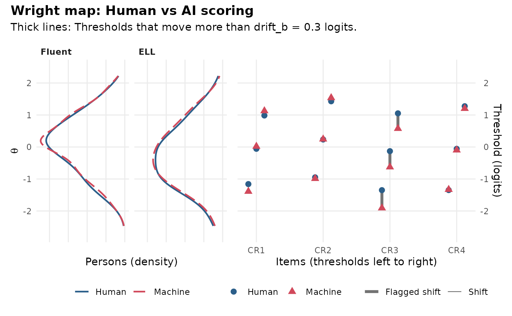

Compare item thresholds and scores under human and AI scoring
Source:R/ai-raters.R
scoring_shift.RdCalibrates the AI-scored items twice on the same test takers, once with the human scores and once with the machine scores, puts both calibrations on one scale, and compares them: How far each item threshold moves when the engine scores instead of a person, and how far the test takers' scores move, overall and in each group. It is a Wright map for the question "would the scale be the same if people had scored it?".
Arguments
- scores
a data frame with one row per scored response (person and item), with a machine and a human score, as aiscored_cr. Rows without both scores are left out.
- machine, human
names of the machine and human score columns.
- person, item
names of the person and item ID columns.
- anchors
optional data frame of the anchor items, one row per person, with a column named as
personand one column per item.- group
optional name of a person-level column of
scores(for example"group").- itemtype
item types for
mirt::mirt(), one for all items or one per item (anchors first). Defaults to"2PL"for 0/1 items and"graded"for the others.- method
the
mirt::fscores()method for the person scores.- rules
thresholds from
mv_rules()(drift_b,drift_a,score_smd,subgroup_smd).- x, object
an
mv_shiftobject.- ...
not used.
Value
An object of class mv_shift: A list with thresholds (one row
per item and threshold: human, machine, shift and flag), items
(slopes and the mean and largest threshold shift of each item),
persons (id, group, theta_human, theta_machine: Both scored
with the human calibration, from the human and the machine scores),
impact (the
mean \(\theta\) change in each group, in logits and SD units),
flags, checks and the two models (human_model, machine_model).
It has print(), tidy() (the flags) and autoplot() methods, and
gg_wright() draws its Wright map: The person distributions under
both scorings next to each item's thresholds, human and machine,
joined by a line. Pass it to ai_audit() in components to add its
flags to an audit.
Details
The human calibration fits the anchor items (anchors, items no engine
scores, such as multiple-choice items) together with the human scores.
The machine calibration fits the same anchors with the machine scores,
with the anchor parameters fixed at their human-calibration values and
the mean and variance of \(\theta\) free, so that both are on the scale
the anchors define (fixed-parameter linking). Without anchors both
calibrations fix \(\theta\) at mean 0 and SD 1; that is a fair
comparison only because the test takers are the same.
A threshold is flagged when it moves by more than drift_b logits in
mv_rules() (check "threshold shift"), and an item's slope when it
changes by more than drift_a (check "slope change").
The person scores answer a different question: What happens to test
takers' scores when the engine scores their responses but the item
parameters stay those of the human calibration, as in operational
scoring with a bank calibrated on human scores? (Rescoring each person
with the machine calibration would hide the engine's effect, because the
recalibrated thresholds absorb it.) The mean \(\theta\) change is flagged when it is larger than score_smd SD
(check "score impact") and, with group, a focal group's change minus
the reference group's when it is larger than subgroup_smd SD (check
"differential impact"): The engine moves one group's scores more than
another's.
See also
rater_facets() for rater severity on the same scale;
ai_audit(), train_scorer().
Examples
# \donttest{
# 2026 validity sample: Students read by a person as well as the engine
cr <- aiscored_cr[aiscored_cr$year == 2026, ]
mc <- aiscored[aiscored$year == 2026, c("student", sprintf("MC%02d", 1:16))]
sh <- scoring_shift(cr, human = "human1", anchors = mc, group = "group")
sh
#> Human vs AI scoring: 4 AI-scored items, 296 persons, linked through 16 anchor items
#>
#> Threshold shift (machine minus human, logits):
#> item a_human a_machine mean_shift max_shift
#> CR1 1.48 1.32 -0.00 -0.23
#> CR2 1.43 1.30 +0.03 +0.11
#> CR3 1.59 1.37 -0.51 -0.56
#> CR4 1.02 1.21 -0.03 -0.07
#>
#> Score impact (mean theta change):
#> group n change smd
#> All 296 +0.04 +0.04
#> Fluent 223 +0.04 +0.04
#> ELL 73 +0.04 +0.05
#>
#> Flags:
#> [REVIEW] threshold shift, CR3, threshold 1: -0.56 logits (human
#> -1.35, machine -1.91). This score is easier to reach when the
#> engine scores: It is more lenient here than human raters.
#> [REVIEW] threshold shift, CR3, threshold 2: -0.50 logits (human
#> -0.13, machine -0.63). This score is easier to reach when the
#> engine scores: It is more lenient here than human raters.
#> [REVIEW] threshold shift, CR3, threshold 3: -0.48 logits (human 1.05,
#> machine 0.58). This score is easier to reach when the engine
#> scores: It is more lenient here than human raters.
sh$impact
#> # A tibble: 3 × 8
#> group n mean_human mean_machine change se smd differential
#> <chr> <int> <dbl> <dbl> <dbl> <dbl> <dbl> <dbl>
#> 1 All 296 -0.000700 0.0387 0.0394 0.00975 0.0424 NA
#> 2 Fluent 223 0.0955 0.133 0.0380 0.0108 0.0408 NA
#> 3 ELL 73 -0.295 -0.251 0.0438 0.0219 0.0471 0.00627
gg_wright(sh)

# }